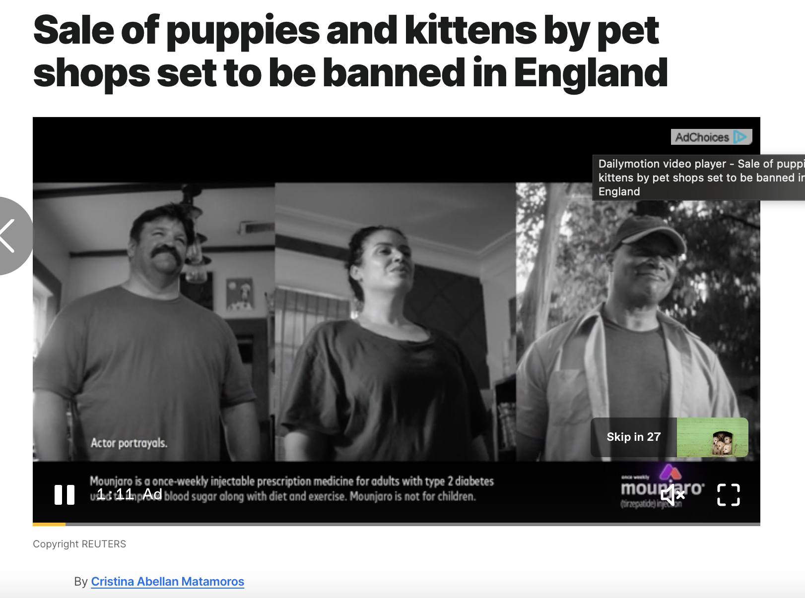
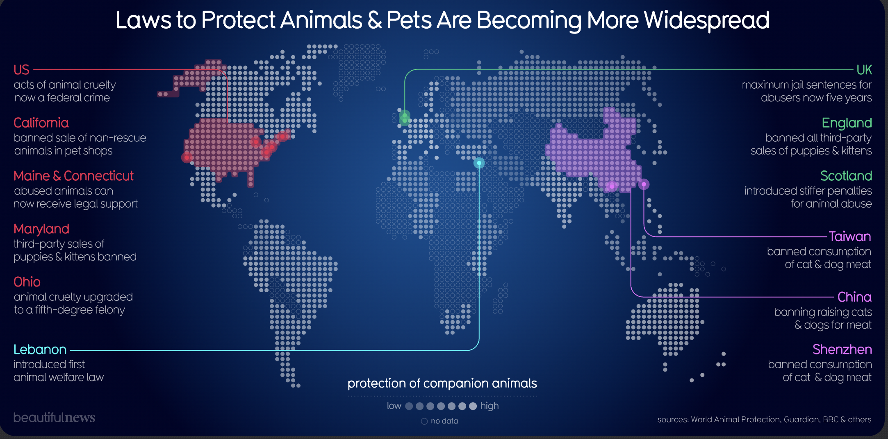
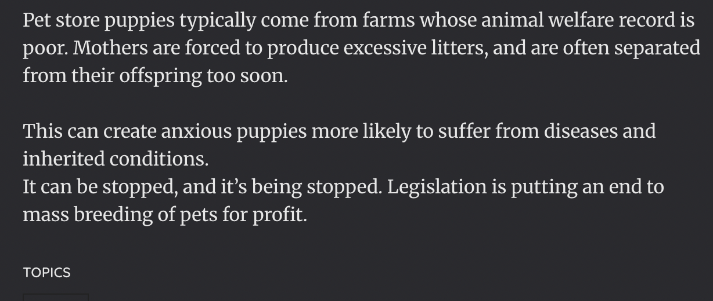

Visualization



Source: [Source Name]
Critique
Information Resolution
The graphic that I chose to look at was the laws to protect animals and pets are being more widespread. There was a bit of information at the bottom of the graphic, it provided a bit of context and information about the graphic. There was also an article that gave a lot more detail and explained the issues that are going on around the world with animals and pets. The graphic is fine in terms of information as they are outlining the laws that were put in place to help the governments make sure that the animals were taken care of. I think something that I would have added to the graphic would be at the bottom where the information is and I have put in some numbers how many animals were affected.
[Additional Concern 1]
The graphic shows the laws that were passed in the different areas of the world and it gives a brief explanation of what they do to help the animals. They don’t have to go into detail about what caused them to be passed, it is quick and simple showing the efforts made to help out the animals. The graphic is a world map and shows that the laws have been passed all over different countries and continents in the world. The different colors that they choose to use for the different countries also make it stand out against the basic colors of the map. Something cool about the graphic that is easy to overlook is how they document the protection of companion animals. They make the continents either have more color if they protect animals or they make them more faded if the places don’t do much to protect them. This is a cool detail that I overlooked at first, but I noticed when I spent more time looking at the graphic.
[Additional Concern 2]
I would say that the conclusions do go past the data. The conclusions show that this is an issue for people across the world as countries try to find ways that animals are not bought from third party people when they are too young and that people aren’t running puppy farms with bad conditions just to pump out these animals to make a profit. These can show that more countries and places can pass laws as well to fight against the people who are doing things to animals. The graphics show that the law being passed in the world can lead to changes in the world and have other countries want to adopt things when they have more animals in the area.
Conclusion
Overall, the graphic does a really good job at showing the laws in the world that have been passed to help with animals and pets. These areas are normally the ones that have more animals compared to other areas. It is also well done with the color coordinated areas and which countries have been more welcome to make these laws to help animals while which countries have been slower to pass these laws.